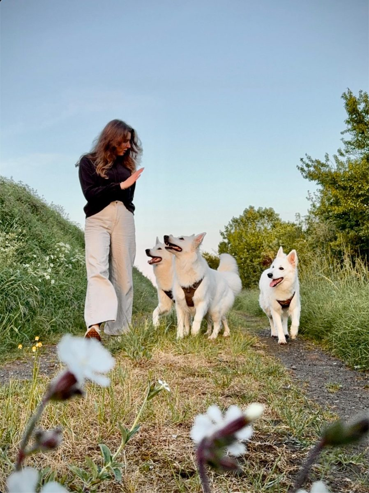
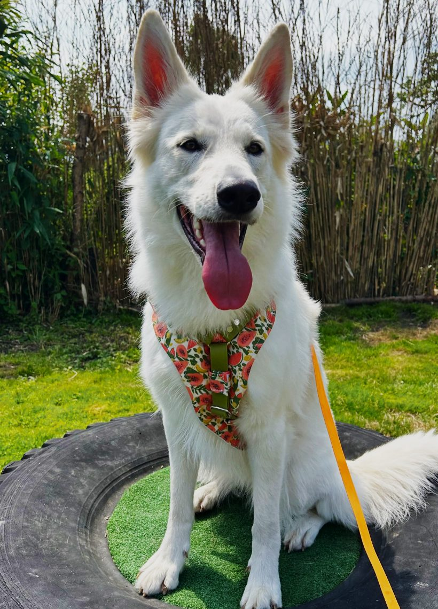
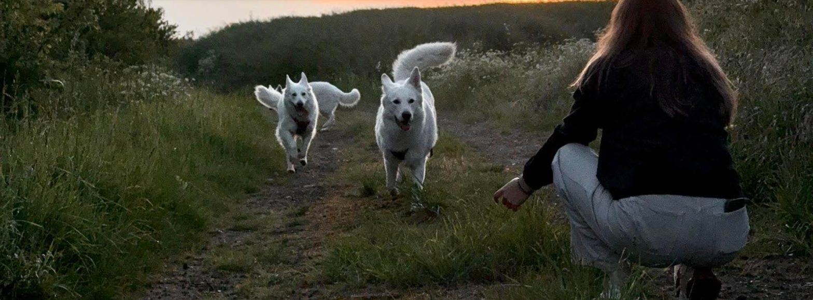

Lilou Roussel, petsitter professionnelle, promène vos chiens et rend visite à vos chats et NAC pendant vos absences, au départ d'Attin.
Pour les chiens, les chats et les NAC, quand vous manquez de temps ou que vous partez quelques jours.

Avant toute première prestation, Lilou vient rencontrer vos animaux et parler de leurs habitudes.
Balade, visite à domicile ou les deux, de 30 minutes à 1 h 30, selon votre animal.
ACACED obtenue pendant un BTS animaux de compagnie, responsabilité civile professionnelle.
Lilou crée aussi des accessoires pour chiens, sur mesure.
